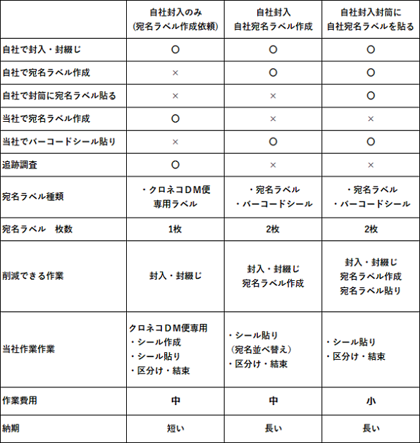

DMを安く送る方法_自社で封入
質問
いつもお世話になります
コロナの影響で売り上げが半減しています。
補助金や融資を使いながら仕事を継続しています。
しかし、出社しているスタッフの仕事量も減っています。
そこで毎月お願いしているＤＭ作業を自社社員で行おうと考えています。
作業は封入から宛名ラベルを作成して貼るところまでです。
失礼とは思いますが作業のことでアドバイスを頂けると助かります。
コロナが落ち着きましたら今まで通りに封入から発送をお願いします。
回答
コロナの影響で自社封入して発送のみを当社に依頼される会社様があります。
理由は○○さんと同じでスタッフの仕事を確保するのが目的です。
DM発送料金を安くするために、自社内で封入作業を行い、ＤＭ発送代行業者に発送のみを
依頼する場合にはいくつか注意があります。（※クロネコＤＭ便の場合）
注意点 重要
１ ＤＭ発送代行専門会社が行う作業
大きな割引を受けているＤＭ発送代行専門会社は発送料金を安くしてもらう条件として下記の作業を行っています。
・郵便番号を数字とみなし、運送会社の指定する郵便番号ごとにまとめて紐で縛る作業を行います。
配達地区へ向かうトラックへ載せるため、行き先ごとにひとまとまりにする必要があるためです。
・郵便番号で区分けして縛ったものに、指定された番号が書いてある用紙を挟み込みます。
一目見て載せるトラックが分かるようにするためです。
郵便番号の区分け結束は制約が多いためＤＭ発送代行会社に依頼することをお勧めします。
２ ヤマト専用宛名ラベル
ＤＭ発送代行専門会社はヤマト運輸よりクロネコＤＭ便のバーコード枠をもらいます。
そのバーコードで追跡調査やポストへの投函完了が確認できます。
この場合は宛名ラベルとバーコードが一体になるため貼り付けする宛名ラベルは1枚だけになります。
※バーコード枠とはバーコードの何番から何番までが○○ＤＭ発送代行会社の割り当て番号として割り振られます。
お客様が自社で宛名ラベルに印刷したものを使いＤＭ発送代行会社で発送する場合には、
ヤマトバーコードがないため管理ができません。
別途ヤマト運輸のバーコードだけのシールを貼ります。
自社で宛名ラベルを作成した時のデメリットとして
・宛名ラベルを2枚貼る作業代金がかかる
・追跡調査などができない
・集客目的のＤＭの場合、2枚貼りのため見栄えが悪くなる。
３ 宛名ラベル印刷時に郵便番号を昇順に並べる
ＤＭ発送代行会社がＤＭ発送価格を下げるための作業として、郵便番号の7桁の数字を小さいものから順番に並べ、
運送会社から指定された郵便番号の区分けを行い、区分けごとに結束して指定された番号の書いてある紙を挟み込む作業ががあります。
郵便番号で区分けするときに、郵便番号がばらばらになっていると大変な手間がかかります。
そのため、郵便番号は小さいものから大きいものに順番に並べる必要があります。
自社で宛名ラベル作成をして割高にならないために
自社で宛名ラベルを作成する場合にはまちがった作業方法のために割高になることがあります。
注意が必要です。要点は3点です。
１ 郵便番号を数字とみて、小さい数字から大きい数字順に印刷
２ 自社印刷の宛名ラベルを使うときには、別途ヤマトバーコードシールを貼る
宛名ラベルとヤマトバーコードシールの2枚貼りになる
３ 自社で作成した宛名ラベルを貼った封筒は段ボールに郵便番号小さい順から並べて入れていき、各段ボールに
郵便番号のいくつからいくつまでをマジックで書く
自社封入方法3パターン
自社で宛名ラベル作成するか、ＤＭ発送代行会社に依頼するか、あるいは
自社で作成した宛名ラベルを自社で封筒に貼るのか、ＤＭ発送代行会社に貼ってもらうのかの3パータンがありあります。
１ 自社封入して、宛名ラベルをＤＭ発送代行会社で作成
２ 自社封入・宛名ラベル作成 宛名ラベル貼りと発送を依頼
３ 自社封入して宛名ラベルを封筒に貼る作業まで行う場合
１ 自社封入して、宛名ラベルをＤＭ発送代行会社で作成
ＤＭ発送代行費を削減するときによく使われます。
宛名ラベルはＤＭ発送代行会社が作るので、宛名ラベルは1枚だけです。
追跡調査もできるのでコストパフォーマンスが高くなります。
私はこの方法をお勧めします。
自社での作業
・封筒に封入して封を綴じる
・封筒を段ボールに入れて送る（入れる順番は考えなくてよい）
・宛名データを送る
ＤＭ発送代行会社への依頼内容
・宛名ラベル作成
・宛名ラベル貼り
・仕分け
・運送会社への納品
メリット
宛名ラベルをＤＭ発送代行会社で作成するため
・宛名ラベルは1枚貼りでＯＫになります。
・追跡調査もできます（クロネコＤＭ便の場合）
２ 自社封入・宛名ラベル作成 宛名ラベル張りと発送を依頼
個人情報漏洩が心配されるときに宛名ラベルだけを自社で作成します。
会社のコンプライアンスの関係で個人情報漏洩リスクを減らすためによく使われます。
自社での作業は
・封筒に封入して封を綴じる
・郵便番号の小さいものから順番に宛名ラベル印刷
・封筒を段ボールに入れて送る（入れる順番は考えなくてよい）
・宛名データを送る
ＤＭ発送代行会社への依頼内容
・宛名ラベル貼り
・ヤマトバーコードシール貼り
・仕分け
・運送会社への納品
デメリット
宛名ラベル自社で作成するため
・宛名ラベルは２枚貼りになります。
・追跡調査もできません。
３ 自社封入して宛名ラベルを封筒に貼る作業まで行う場合
自社で封筒に宛名ラベルまで貼る場合は封筒を郵便番号の小さいものから順番に貼り
段ボールに順番に入れていく必要があります。
段ボールには郵便番号のどこからどこまでが入っているかを記載する必要もあります。
後から一つ追加で出てきた場合や入れ間違えた場合は大変な作業になります。
郵便番号の順番が崩れた状態でＤＭ発送代行会社に送られた場合、仕分けして郵便番号順に
並べなおす必要があるためとても時間とコストがかかります。
特に厚いものや重いものはより多くの料金と時間がかかります。
自社での作業は
・封筒に封入して封を綴じる
・郵便番号の小さいものから順番に宛名ラベル印刷
・郵便番号の小さいものから順番に宛名ラベルを貼る
・郵便番号の小さいものから順番に段ボールに入れれる
・段ボールに郵便番号○○から○○までと書く
ＤＭ発送代行会社への依頼内容
・ヤマトバーコードシール貼り
・仕分け
・運送会社への納品
デメリット
宛名ラベル自社で作成するため
・宛名ラベルは２枚貼りになります。
・追跡調査もできません。
自社封入・メリット・デメリット

安くするためのポイント
１ 自社封入して、宛名ラベルをＤＭ発送代行会社で作成
自社で封入・封綴じ作業をする場合の人件費と時間と作業場所のコストを考える。
多くの場合は自社で行うよりも封入作業のプロ集団がいるＤＭ発送代行会社に依頼したほうが安くなる。
余剰人員がいる場合や自社で作業チームを抱えている場合に有効です。
２ 自社封入・宛名ラベル作成 宛名ラベル貼りと発送を依頼
運送会社のシステム上、郵便番号を数字の小さいものから順番に並べ替える必要があるため、
宛名ラベル印刷時に郵便番号を昇順に印刷すると追加料金が取られない。
ただし、バーコードシールを貼る必要があるため、貼り作業料金が別途必要になる。
まとめ
自社で作業をしてコストダウンになるかは以下の項目を検討してください。
１ 人件費
２ 作業スペース
３ 継続性
４ 作業員の確保
５ 作業員の習熟度
６ トラブル時の対応方法
下記のような諸事情がある場合は自社封入を行うことをお勧めします。
・社内コンプライアンス上、データ形式で社外に持ち出せない場合
・自社内に余剰人員がいる場合
・自社に特化したＤＭ発送作業チームがある場合
DMを安く送る方法 関連ページ


--------------------------------------------------------------------
※当社でDM発送代行をプランニングする際は、もちろん以下ノウハウを駆使してお見積しています。
お見積だけでもどうぞお気軽にご依頼ください（無理な売り込みはいたしません）。
０５６１－３７－２０２７ ９～１８時・土日祝休
お見積はその場でお答えいたします
無料お見積フォームはこちら ３時間以内に返信します
無料 ＤＭを安く送る方法 小冊子プレゼント
その他にも注意点などもありますので下記ページも参考にしてください。
他によく読まれているページ
・紙封筒と透明ビニール封筒 反応率が良いのは?
・DMの開封率を上げる方法
・ＤＭの反応率は
・うまくいっている業界･業種
・A4サイズ紙でハガキを
他のおすすめ記事
016_ＤＭ作成前に知っておきたいことベスト１０